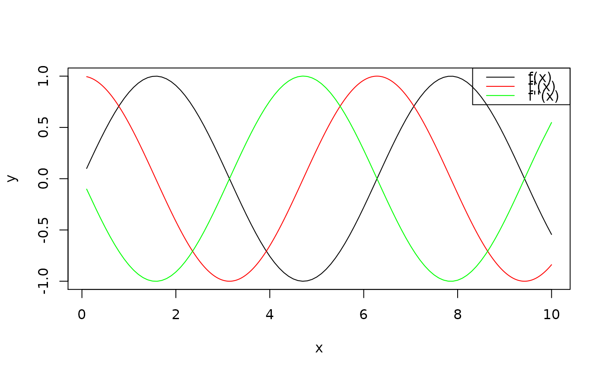
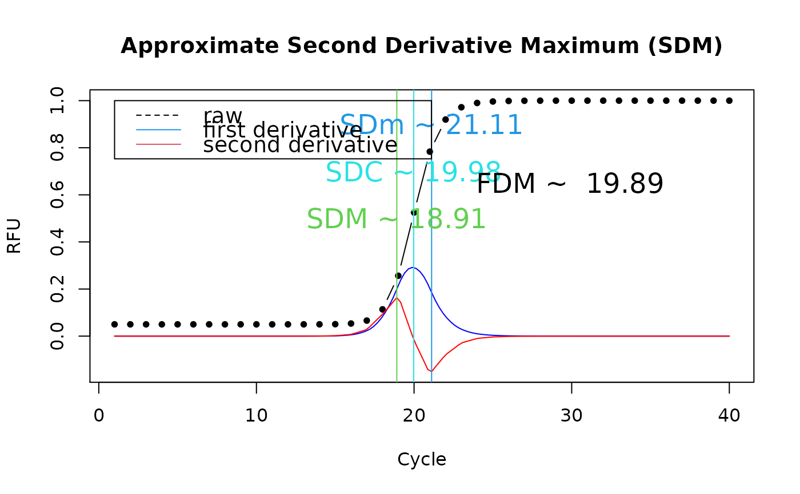

inder.RdA function inder ("in" + "der" = interpolate derivatives) for
interpolating first and second derivatives using the five-point stencil.
Therefore this function can be used to estimate the Cq (cycle of
quantification) of an amplification curve. First positive derivative also
known as First Derivative Maximum (FDM) and the Second Derivative Maximum
(SDM) are calculated this way (Ruijter et al. 2013). However, from the
mathematical point of view it can also be used to calculate the melting
point for melting curve analysis (compare Roediger et al. 2013) provided
that the sign of the derivative is changed.
inder(x, y, Nip = 4, logy = FALSE, smooth.method = "spline")
| x | is a |
|---|---|
| y | is a vector of dependent variable. Omitted if |
| Nip | is a value which defines how often an interpolation takes place at n
equally
spaced points spanning the interval (default 4). |
| logy | If |
| smooth.method | a character vector of length 1 or |
The function y = f(x) is numerically derived using the five-point stencil.
This method does not require any assumptions regarding the function f.
A smoothing procedure greatly enhances calculating derivative calculation. inder
uses two smoothing algorithms best suited for this approach. A smoothing can
be omitted by setting smooth.method to NULL, which is advisable in case of
the already smoothed data.
An object of der class.
Ruijter JM, Pfaffl MW, Zhao S, et al. (2013) Evaluation of qPCR curve analysis methods for reliable biomarker discovery: bias, resolution, precision, and implications. Methods San Diego Calif 59:32--46.
Surface Melting Curve Analysis with R. S. Roediger, A. Boehm and I. Schimke. The R Journal. 5(2):37--52, 2013. https://journal.r-project.org
Stefan Roediger, Michal Burdukiewicz
# Second example # Determine the approximate second derivative maximum # for a qPCR experiment. SDM, isPCR <- AmpSim(cyc = 1:40) res <- inder(isPCR) plot(isPCR, xlab = "Cycle", ylab = "RFU", ylim = c(-0.15,1), main = "Approximate Second Derivative Maximum (SDM)", type = "b", pch = 20)summ <- summary(res, print = FALSE) abline(v = c(summ["SDM"], summ["SDm"], summ["SDC"]), col = c(3,4,5))legend(1, 1, c("raw", "first derivative", "second derivative"), col = c(1,4,2), lty = c(2,1,1), cex = 1.2)